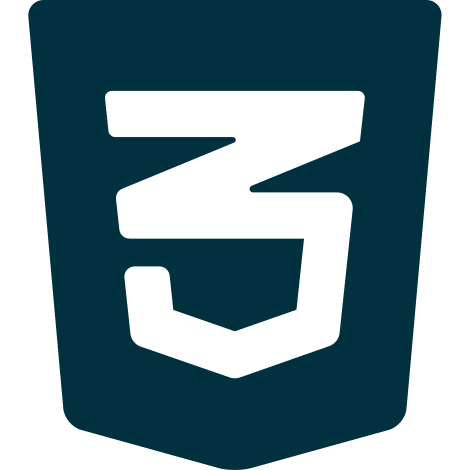
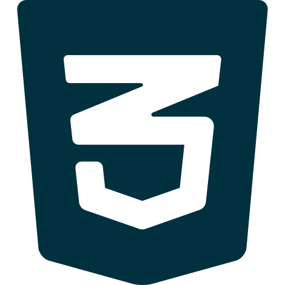

Olá, me chamo Vand Aquino e sou um profissional das mais diversas Tecnologias e atuo nos mais diversos segmentos no ramo de Informática, Design e Comunicação.
Atualmente estou aprimorando minhas habilidades no campo de Desenvolvimento de Sistemas. Então, se você precisa de alguém para tirar seu Projeto do papel, dá uma olhada nos meus serviços e projetos!

 


Operações Relacionadas à Soluções de Tecnologia; B2B; Resoluções Técnicas N1 e N2; Implantação e Treinamento de Software; Manutenção de Micro; Melhorias e Soluções de Software.
Operações com Software "TV-PLAY SE" na TV Arapuan - João Pessoa, Paraíba. Também desenvolvi um projeto bem legal para as Eleições 2020, olha aqui.
Criação e Manutenção do Website. Design de Artes e Redes Sociais numa revista de publicidade em João Pessoa, Paraíba
Edições de vídeo e imagem com Pacote Adobe para transmissão Estadual e Nacional pela Rede Brasil
Pós-Graduação focada na linguagem SQL e PL/SQL, você pode conferir meu Trabalho de Conclusão de Curso com nota 9,7 de aprovação e Histórico!
Minha primeira graduação em Tecnologia! Confira aqui meu Histórico de Disciplinas!
Habilitação em Jornalismo na Universidade Federal da Paraíba. Confira meu TCC com nota 10 de aprovação e Artigo Internacional
Aprimoramento em de conhecimentos e desenvolvimento em HTML, CSS, JAVASCRIPT, JQUERY, ANGULAR e JAVA.
Análise de vulnerabilidades, Softwares de Pentest, Engenharia Social, Segurança da Informação.
Aprimoramento em de conhecimentos e desenvolvimento em HTML, CSS, JAVASCRIPT, JQUERY.
Aprimoramento em de conhecimentos e desenvolvimento em HTML, CSS, JAVASCRIPT, JQUERY.
Edição de Vídeos, Imagens e Ilustração pela TV UFPB afiliada da Rede Brasil.
Pesquisa e publicação de artigo sobre a memória audiovisual na Paraíba anterior aos anos 80.
Precisa de alguém pra cuidar das necessidades técnicas do seu Blog/Loja? Eu cuido para você!
Solução de vendas para todo Brasil voltado para microempreendedores, pequenas e médias empresas.
Você ou sua equipe precisam de um lugar para expor suas notícias, ideias ou artigos? Vamos criar um Portal!
Exiba suas conquistas profissionais de forma elegante e chamativa! Totalmente customizável e fácil de usar!
Motion Graphics; Tratamento de Imagens; Edição de Vídeos; Ilustrações; Vetorização; Banners; Cartões de Visita, é comigo ;)
Limpeza; Formatação; Instalação de Software; Backup; Verificação de Segurança; Manutenção preventiva.
 Ver Projeto
Ver Projeto
Seja Vida - ASSEVI
Patrocinado pela Midiativamente, o projeto presta assistência a crianças e adolescentes em vulnerabilidade social. O Seja Vida promove a solidariedade como o elo entre as pessoas e valorizar o conhecimento através da comunicação, informática e esporte.
[V1] Protetores de Animais
Esse projeto foi a primeira versão do localizador de protetores de animais. O Projeto tem o intuito de facilitar o acesso à informação quando o assunto é Proteção aos Animais. O site registra uma network de pessoas, locais de interesse e abrigos. Juntos somos mais fortes!
 Ver Projeto
Ver Projeto
Portal VigiaPB
O Portal VigiaPB é um website de notícias mantido por jornalistas formados que trabalham com o monitoramento de outros veículos de comunicação do estado da Paraíba.
Eleições TV Arapuan 2020
No segundo turno pela prefeitura de João Pessoa-PB, fui convidado para participar de um desafio: entregar o resultado das eleições antes mesmo da apuração total do TSE. O resultado teria que ser atingido com uma amostra menor de votos (zonas eleitorais específicas) e com um sistema desenvolvido às pressas em cerca de ~2 semanas. A aplicação entregou um resultado rápido e preciso com uma margem de erro de aproximadamente ~0.4% em menos de 30 minutos. Leia mais aqui.
Ecommerciar
A Ecommerciar oferece serviços de Loja Virtual baseada em assinaturas mensais. Os profissionais da ecommerciar tem como missão cuidar das questões técnicas das lojas de seus clientes. Esse cuidado se extende com desenvolvimento, design, segurança e marketing.
Midiativamente
O Grupo midiativamente mira na colaboração entre projetos/empreendimentos que tem como base Tecnologia, Marketing, Comunicação e Design.
Flora Afeto
A Flora Afeto é uma Loja Virtual que foca suas vendas em lembrancinhas personalizadas com as mais variadas espécies de plantas. Vale a pena conferir o catálogo desse empreendimento!
O Patrãozinho
O músico "O Patrãozinho", que é cantor do gênero musical "Brega-Funk e Batidão", requisitou um Motion Graphic para o lançamento de um EP chamado "No Paredão". O Design serve para qualquer música do gênero.
Loja My Closet
Arte para a loja "My Closet"
Revista Achei Jampa
Prestei serviço como Designer Gráfico de duas edições da revista de publicidade "Achei Jampa", que atuava no extremo litoral da Paraíba.
Category - Category
Paragraph
Categoria - Category
Long Description